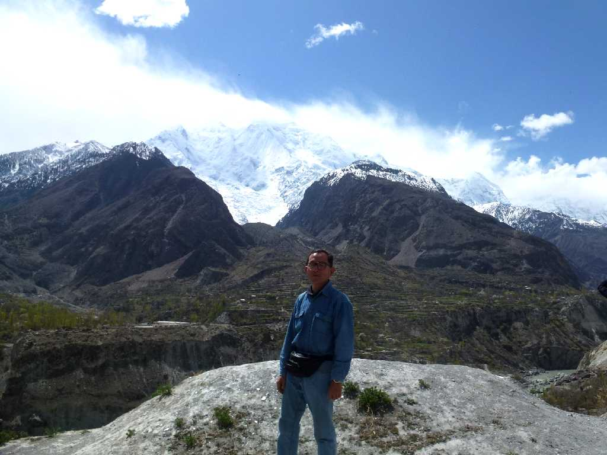
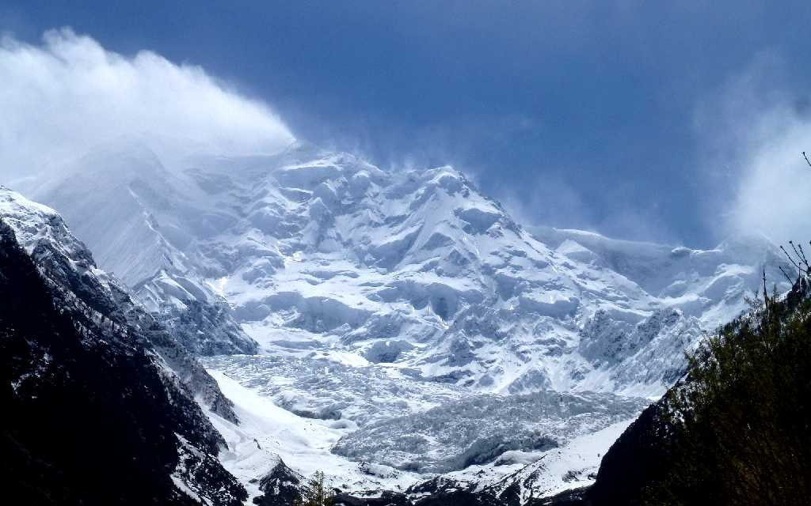
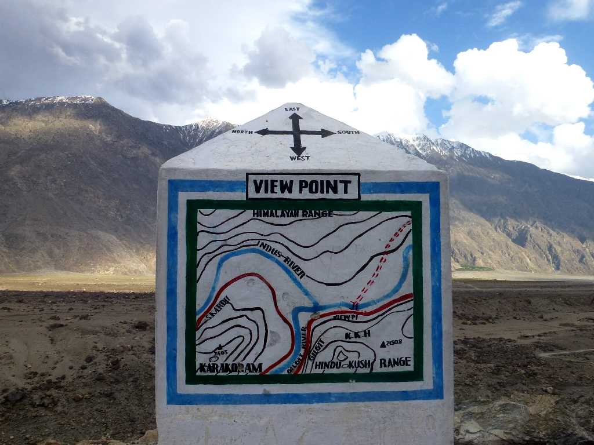
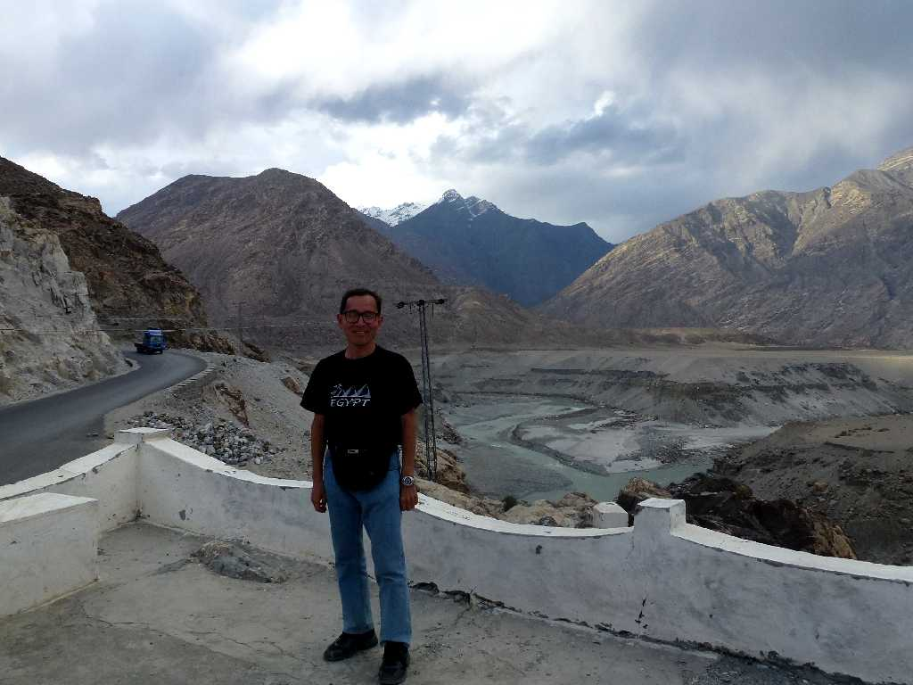
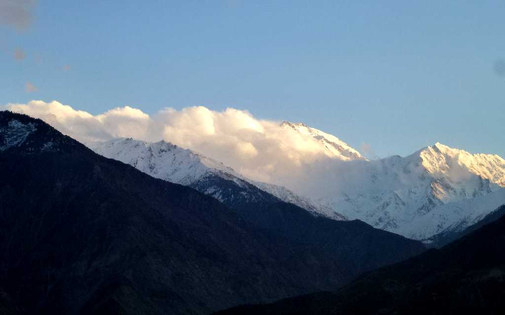
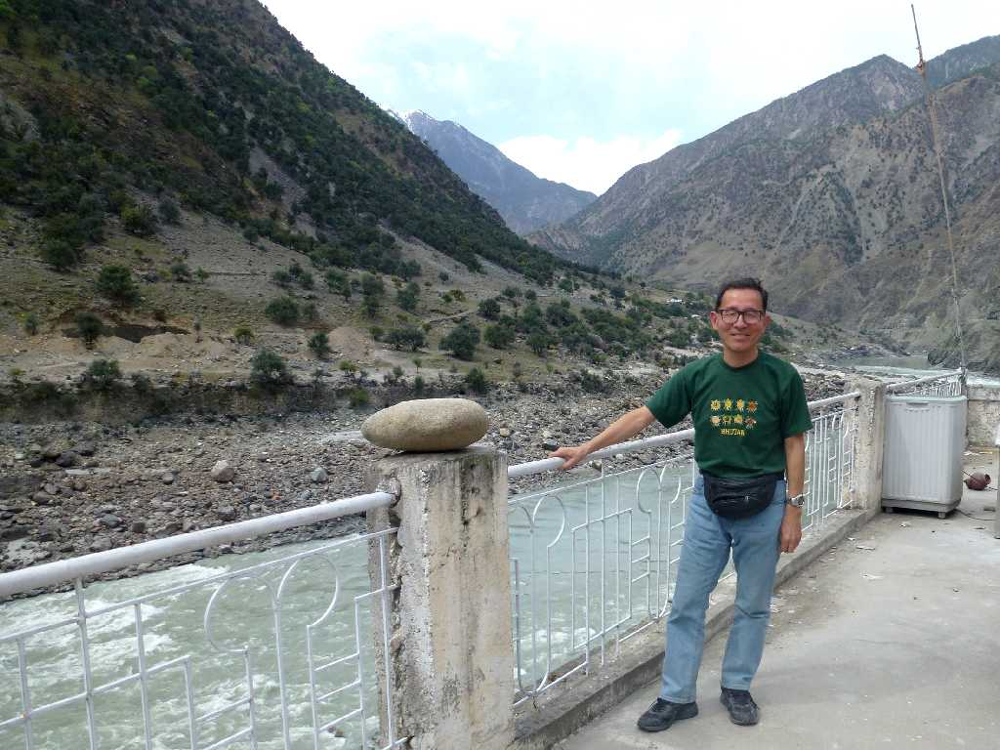
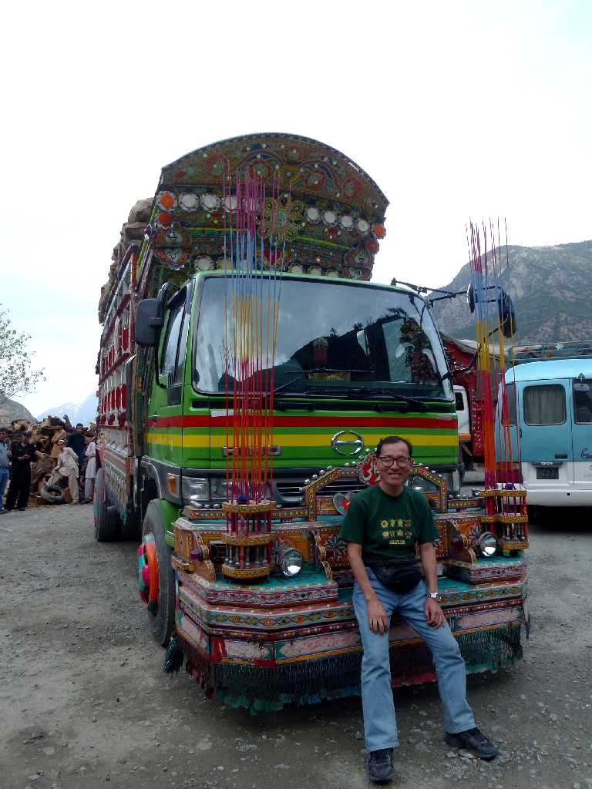
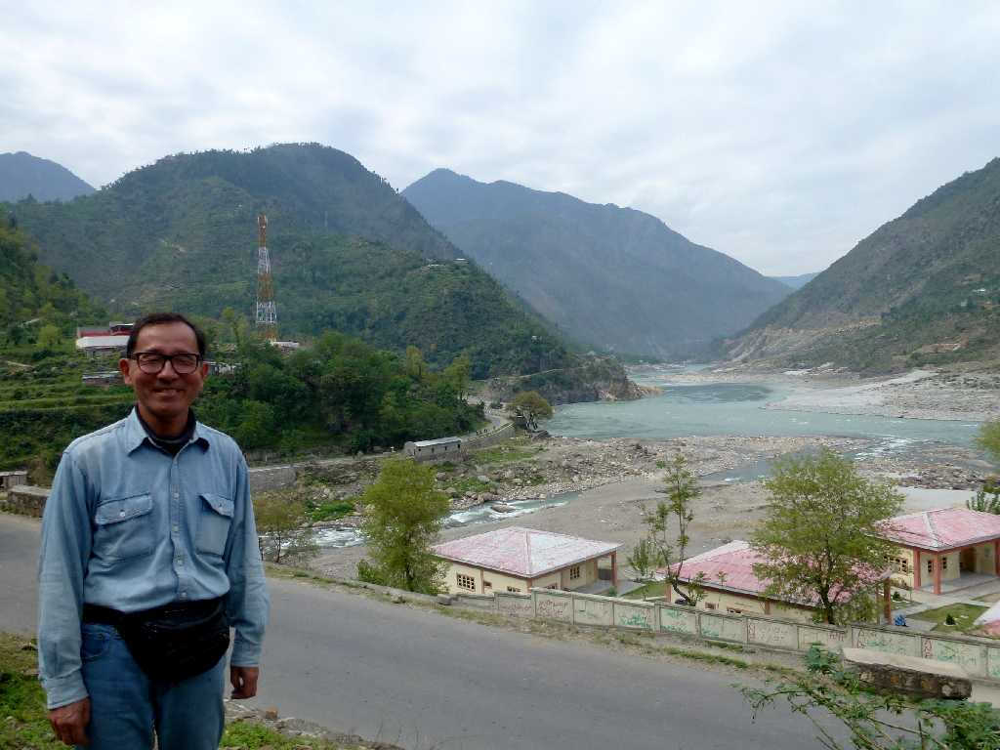
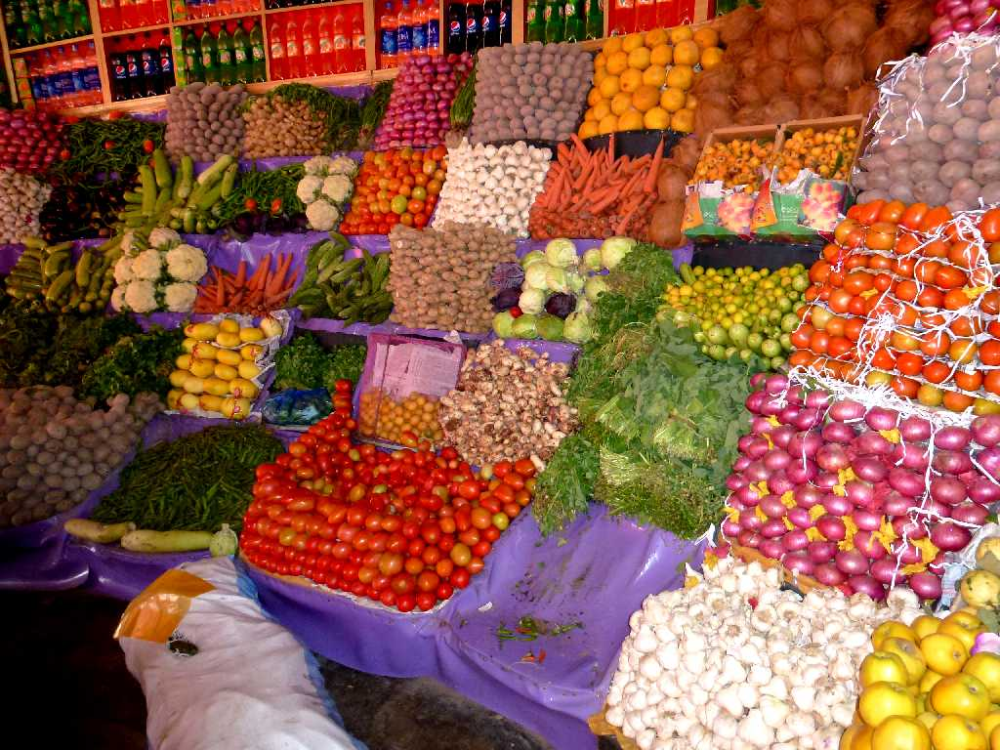
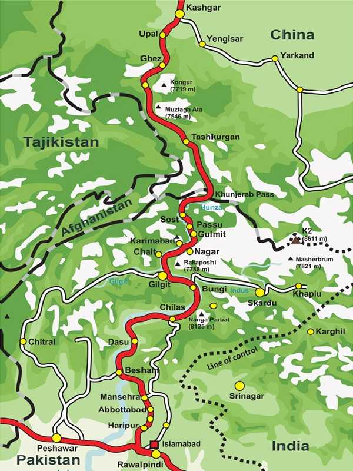

Nagar Valley
ナガール渓谷からフンザ渓谷に戻り３日間カラコルムハイウェイをイスラマバードまで下り帰国の途に就く

April 5 2013 Hunza Valley Karakoram Highway

Glacier Karakoram Highway

Indus River & Gilgit River Meet Point Karakoram Highway
夕刻ギルギット川がインダス河に合流する地点に戻って来た

April 5 2013 Indus River & Gilgit River Meet Point Karakoram Highway

West Himalaya Karakoram Highway
ここからヒマラヤ山脈の西端をインダス河沿いに下る

April 6 2013 Rock Art Chilas Karakoram Highway
昔の交易路には岩絵が残っている

April 6 2013 Karakoram Highway

April 6 2013 Decoration Truck Karakoram Highway
今も重要な交易路のカラコルムハイウエイにはデコトラが走る

April 7 2013 Karakoram Highway

Souk Karakoram Highway
帰国前にカラコルムハイウエイ沿いの市場に立寄る
